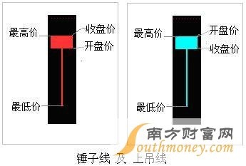

股票线图
k线
锤子线和上吊线：
定义： 锤子线和上吊线是相对于增长和下跌来说的，如果后市是上涨那么久叫锤子线，如果是下跌，那么就叫上吊线。如图：
使用前提：
- 长时间的下跌，出现锤子线，或者长时间的上涨出现锤子线(上吊线)
- 下影线要是实体的2倍以上。
- 一般是没有上影线，如果有也是很短的
如何使用：
- 锤子线的出现时证明着走向有很大的可能进行逆转，当长期下跌，在底部出现锤子线，很可能已经找到支撑位，空头试图拉低，但是被多头拉回，空头的企图没有得逞，这就说明此时多头是占主。
- 何时出手，如果是锤子之后上涨趋势，那么第二天高开跳空或者是价位到达前一天锤子线实体的收盘价可出手，如果开始是下降趋势，然后反弹，反弹到前一天锤子线实体的收盘价可出手买入。如果是上吊线，那么最好早抛。
5日，10日，20日，30日，60日平均线